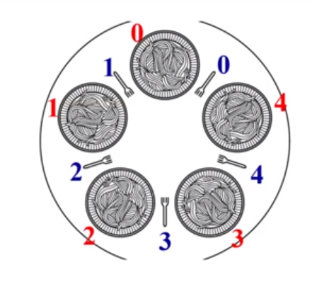

| 创建时间： | 2020/4/16 20:18 |
| 更新时间： | 2020/4/16 21:57 |
| 作者： | lzr |
话说在以前，有五个废寝忘食的哲学家，他们一起坐在一张桌子前想问题。桌子上有饭，他们饿了就吃。但是，桌子上只有五个盘子和五个叉子，而他们每个人吃饭都需要用两个叉子。
用一张图来描述一下：

每两个哲学家之间有一把叉子，哲学家有两个动作，思考和进餐。
进餐的时候哲学家拿起自己左右的两把叉子，思考的时候把两把叉子都放下。只有同时拿到两把叉子才能吃东西。
如何保证哲学家们的动作？如：不出现有人永远拿不到叉子。
共享数据
take_fork(i):P(fork[i])
我们开始考虑这个问题，首先按照普通的思路来考虑一个方案：
每个线程（哲学家）都按照这样的思路走，会怎么样呢？
伪代码：
#define N 5 //哲学家数量5
void philosopher(int i)//哲学家编号0-4
while(1){
think(); //思考中
take_fork(i); //拿起左边叉子
take_fork((i+1)%N); //拿起右边叉子
eat(); //吃饭
put_fork(i); //放下左边叉子
put_fork((i+1)%N); //放下右边叉子
}
这个方法正确么？
并不，它很有可能导致死锁。比如说五个人一起拿起来自己左边的叉子，然后都在等待右手边的叉子，于是进入了死锁。。
改进：
先去拿左边的叉子，如果右边的叉子还在，就拿起来。如果不在，就把左边的叉子也放下来，然后等一会。
伪代码：
#define N 5 //哲学家数量5
void philosopher(int i)//哲学家编号0-4
while(1){
think(); //思考中
take_fork(i); //拿起左边叉子
if(fork((i+1)%N)){ //如果右边叉子还在
take_fork((i+1)%N); //拿起右边叉子
break; //两把叉子都到手
}
else{
put_fork(i); //放下左边叉子
wait_some_time(); //等一会
}
}
这样的代码可以么？
改进了，但是还不行。为什么呢？五个人一起拿起叉子，然后发现右边的叉子没有，然后把左手边的叉子放下。等一会之后，又回到最初的起点~~
那怎么修改呢？让他们每个人等的时间不一样不就行了嘛。
伪代码：
#define N 5 //哲学家数量5
void philosopher(int i)//哲学家编号0-4
while(1){
think(); //思考中
take_fork(i); //拿起左边叉子
if(fork((i+1)%N)){ //如果右边叉子还在
take_fork((i+1)%N); //拿起右边叉子
break; //两把叉子都到手
}
else{
put_fork(i); //放下左边叉子
wait_random_time(); //等一会
}
}
仔细想想，这样确实可行了，大家都能吃到饭了。
但这个依赖随机性，又是忙等待，可能并不是一个很好的选择。
有没有别的办法？
我们也可以同一时间只让一个哲学家吃饭，其他人饿了就等着。
伪代码：
#define N 5 //哲学家数量5
void philosopher(int i)//哲学家编号0-4
semephore mutex //互斥信号量0/1
while(1){
think(); //思考中
P(mutex);
take_fork(i); //拿起左边叉子
take_fork((i+1)%N); //拿起右边叉子
eat(); //吃饭
put_fork(i); //放下左边叉子
put_fork((i+1)%N); //放下右边叉子
V(mutex);
}
这种方式无疑也是正常运行的。但是明明有5把叉子，你只让一个人吃。。这也太浪费。
那我们再重新分析一下，其实题目的要求就是，两个相邻的哲学家肯定不能同时吃饭。换句话说，不相邻的哲学家就可以同时进餐。
那我们尝试这种思路：
这个思路会不会好一些呢？和上面的方案比起来，这个不依赖忙等待，也不依赖随机数，同时也可以有不同数量的人吃饭。这么看来这种方案要比刚刚的几种方案都好一些。
必须有数据结构来描述每个哲学家当前的状态
//哲学家个数
#define N 5
//第i个哲学家的左边邻居
#define LEFT i
//第i个哲学家的右边邻居
#define RIGHT (i+1)%N
//思考状态
#define Thinking 0
//饥饿状态
#define Hungry 1
//吃饭状态
#define Eating 2
//记录每个人的状态
int state[N]
该状态是一个临界资源，各个哲学家对它的访问应该互斥的进行——进程互斥
//互斥信号量，初值为1
semaphore mutex;
一个哲学家吃完后，可能要唤醒他旁边的人，两者之间有同步关系——进程同步
//同步信号量，初值为0
semaphore s[N]
void philosopher(int i){
while(true){
//思考中
think();
//拿到两把叉子或者被阻塞
take_forks(i);
//吃饭
eat();
//把两把叉子放回去并尝试唤醒两边的人
put_forks(i);
}
}
void take_forks(int i){
//进入临界区
P(mutex);
//饿了
state[i] = Hungry;
//试图拿两把叉子
test_take_left_right_forks(i);
//退出临界区
V(mutex);
//如果没拿到叉子就阻塞
P(s[i])
}
void test_take_left_right_forks(int i){
//因为不仅仅是自己饿的时候回调用这个函数
//左右两边的人有时候会监察他的状态
//所以要检查是否是饥饿状态
if(state[i]==Hungry
&& state[LEFT] != Eating
&& state[RIGHT] != Eating
){
//两把叉子到手
state[i] = Eating;
//通知第i个人可以恰饭了
//因为这个地方V之后，s[i]=1,在外层p就不会阻塞
//如果没有V，在外层P之后就会阻塞
V(s[i]);
}
}
void put_forks(int i){
//恰饱饱了，开始思考
state[i] = Thinking;
//看看左边的人能不能吃
test_take_left_right_forks(LEFT);
//看看右边的人能不能吃
test_take_left_right_forks(RIGHT);
}
这段代码还是比较长的，但是大体思路就是刚刚上面分析的那样。
具体的实现细节都在注释里了，希望读者在阅读的时候可以好好看看注释。